Котельное оборудование
Металлоуловитель
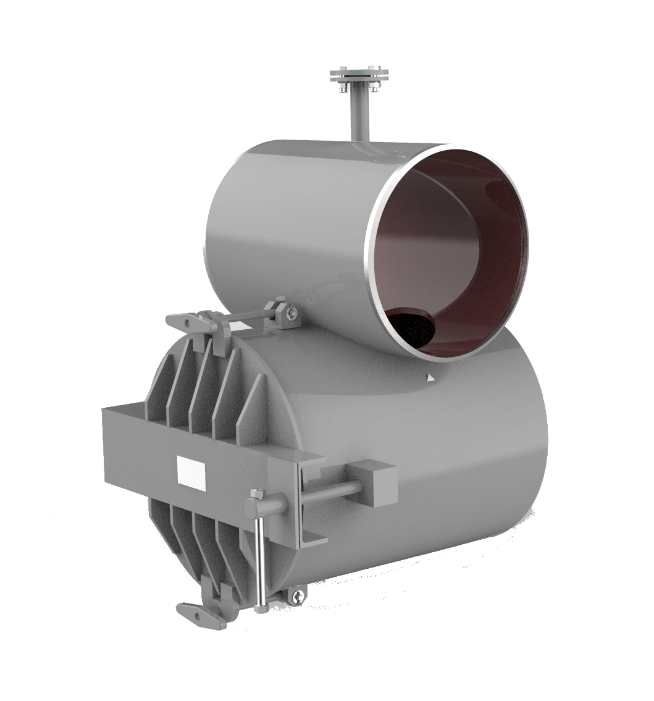Металлоуловитель предназначен для защиты шламового насоса от включений, которые могут находиться в приёмной ёмкости пульпы.
Устанавливается на горизонтальном участке всасывающего пульпопровода шламового насоса в отапливаемом помещении шламовой насосной.
- Давление среды –0,6МПа( 6,0кгс/см2)
- Температура среды - 70°С мах.
- Рабочая среда – шламовые воды.
- Класс гермитичности А по ГОСТ Р 54808-2011.
- Корпус-Ст 20.
- Габаритные размеры - 684х1075х800 мм
- Вес - 220 кг
Гидротранспортер
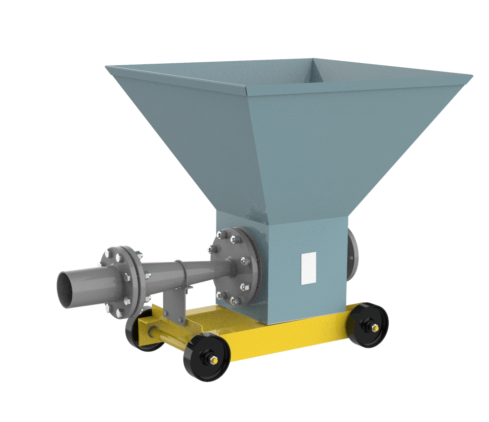Гидротранспортер передвижной служит для транспортирования реагентов в системах водоподготовки.
ОСНОВНЫЕ ТЕХНИЧЕСКИЕ ХАРАКТЕРИСТИКИ
- Напор транспортирующей среды – 2,2кгс/см2
- Расход транспортирующей среды – 20м3/ч.
- Емкость бункера – 0,2м3.
- Габаритные размеры - 823х823х1168 мм
- Вес - 118 кг
Пневмокамерный насос
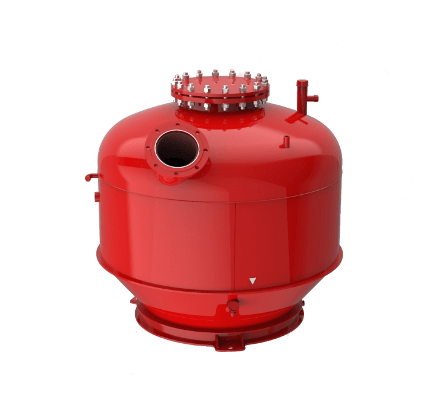Пневмокамерный насос предназначен для транспортировки сыпучих материалов. Устанавливается на пневмотранспортных линиях сыпучих материалов цементных заводов.
- Рабочее давление - 0,5 МПа
- Рабочая температура - 60°С
- Рабочая среда - воздух
- Максимальная масса транспортируемой среды - 1500 кг
- Габаритные размеры - 1500х1575х1600 мм
- Вес - 870 кг
Оборудование для производства экструдированного пенополистирола
Станок рейсмусовый
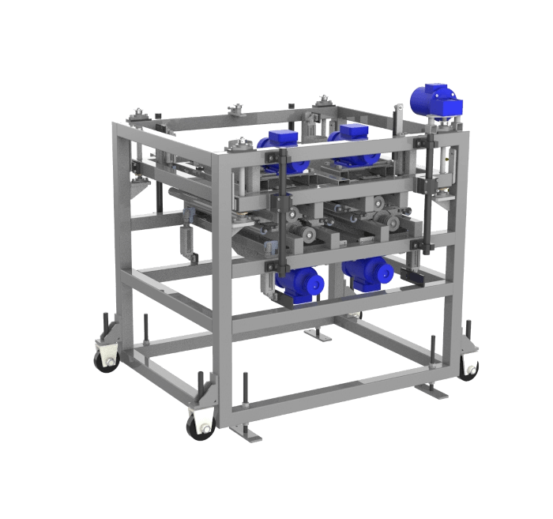Станок рейсмусовый для обработки поверхностей плит из экструдированного пенополистирола. Устанавливается на линии производства утеплительных плит. Станок позволяет фрезеровать и делать пазы в поверхности плиты с нижней и верхней стороны. Станок оснащен вытяжными зонтами для системы аспирации воздуха.
- Размеры фрезеруемой плиты: ширина / толщина - 660-870мм/20-150мм
- Точность выставления высоты фрезеруемой плиты - 0,1 мм
- Максимальная скорость подачи плиты - 40 м/мин
- Глубина фрезерования плоскостей плиты - 1,5-5 мм
- Глубина/ширина паза после фрезеровки - 5/5 мм
- Шаг между пазами
- Максимальная потребляемая мощность -12,2 кВт
- Давление сжатого воздуха пневмосистемы 0,3..0,5 МПа
- Габаритные размеры - 852х1560х2215 мм
- Вес - 1335 кг
Секция термотоннеля
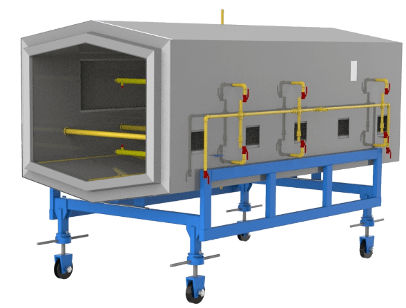Секция термотоннеля предназначена для термостабилизации плит из экструдированного пенополистирола. Устанавливается на линии производства утеплительных плит. Секция устанавливается одна за другой на линии рольганга прокатки плит. В секции происходит распыл водяного пара для прогрева плит. Внутренний каркас секции изготовлен из нержавеющей стали.
- Размеры плиты: ширина / толщина - 660-870мм/20-150мм
- Максимальная скорость подачи плиты - 40 м/мин
- Расход пара на секцию - 0,5..1м3
- Температура водяного пара - 120°С
- Давление водяного пара - 0,3..0,5 МПа
- Габаритные размеры секции - 1575х1900х3060 мм
- Вес - 911 кг
Оборудование для сахарного производства
Фильтр емкостной
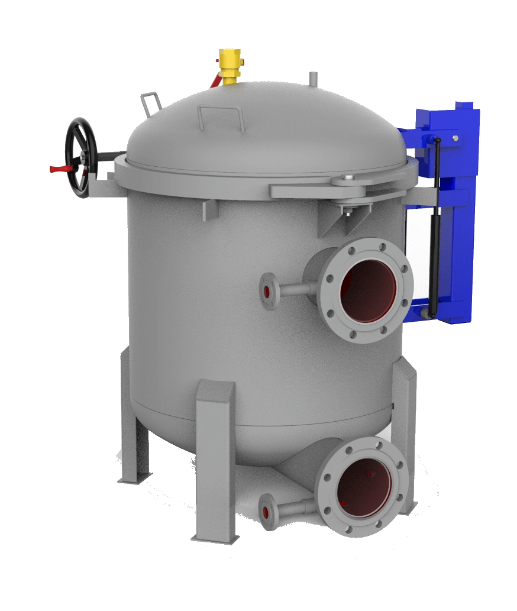Фильтр емкостной ФПУ-8 предназначен для очистки жидкостей от взвешенных частиц. Устанавливается на линии фильтрации сахарного сиропа. Изготавливается из нержавеющей стали.
- Давление среды –0,6МПа( 6,0кгс/см2)
- Температура среды - 120°С мах.
- Присоединительные размеры трубопровода Ду, мм - 150
- Класс гермитичности А по ГОСТ 9544-2015
- Габаритные размеры - 1322х1190х1322 мм
- Вес - 310 кг
Клеровочная мешалка сахара
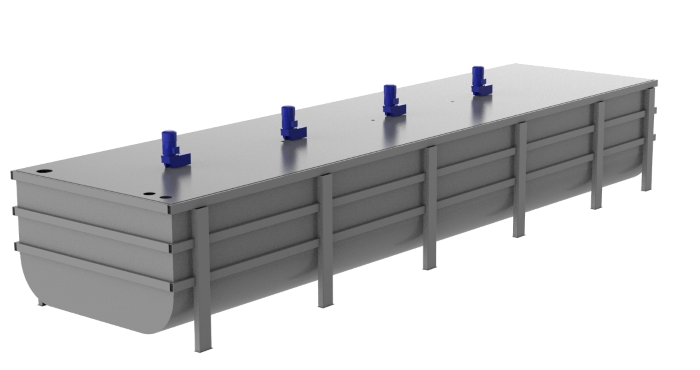Клеровочная мешалка сахара второго и третьего продукта сиропа. Устанавливается на линии сахарного производства. Изготавливается из нержавеющей стали.
- Рабочий объем емкости - 35 м3
- Температура среды - 120°С мах
- Рабочая среда – сахарный сироп.
- Мешалка оснащена вертикальными электромеханическими циркуляторами, для перемешивания сиропа
- Габаритные размеры - 2596х3110х9600 мм
- Вес - 7314 кг
Закрытая мешалка сахара
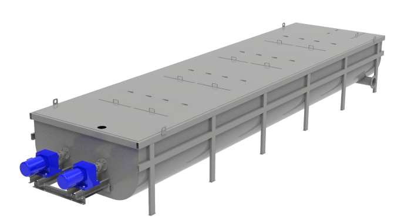Закрытая мешалка сахара второго и третьего продукта сиропом из выпарной установки Устанавливается на линии сахарного производства. Изготавливается из нержавеющей стали.
- Рабочий объем емкости - 25 м3
- Температура среды - 120°С мах.
- Рабочая среда – сахарный сироп
- Мешалка оснащена горизонтальными электромеханическими циркуляторами, для перемешивания сиропа
- Габаритные размеры - 1200х2600х10800 мм
- Вес - 5900 кг
Оборудование для котельных агрегатов
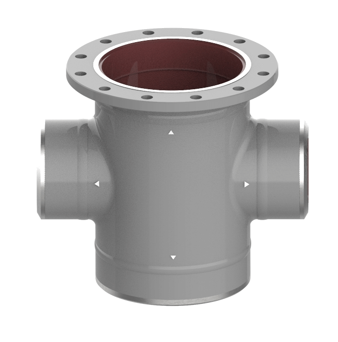
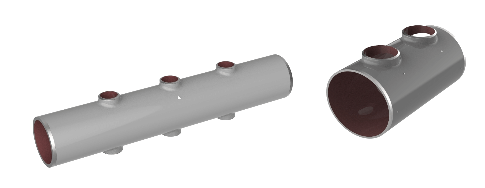На предприятии освоена технология вытяжки горловин трубопроводов, позволяющая уйти от не контролируемых угловых сварных соединений приварных патрубков, при изготовлении коллекторов, тройников и т.д.
Заготовки коллекторов котельных агрегатов с вытяжкой горловины. Наружный диаметр заготовки до 530 мм включительно.
Корпуса регулирующих клапанов для АЭС выполнены с применением технологии вытяжки горловин.
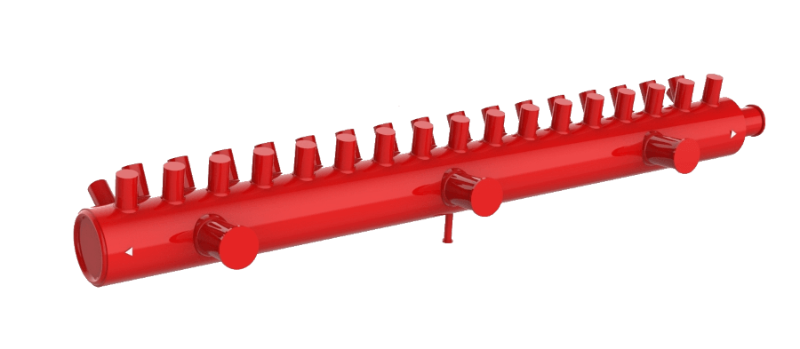Предприятие имеет опыт изготовления комплектующих и запасных частей к котельным агрегатам и теплообменным аппаратам тепловой энергетики и нефти-химической промышленности в том числе:
Предприятие имеет опыт изготовления гибов трубопроводов и змеевиков различной формы сложности до Ø159 включительно:
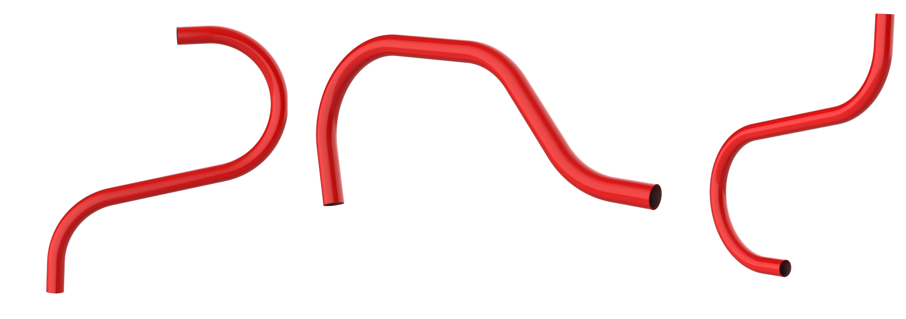Гибы опускных трубопроводов Ø102х5 для котельных агрегатов, радиус гиба 300 мм
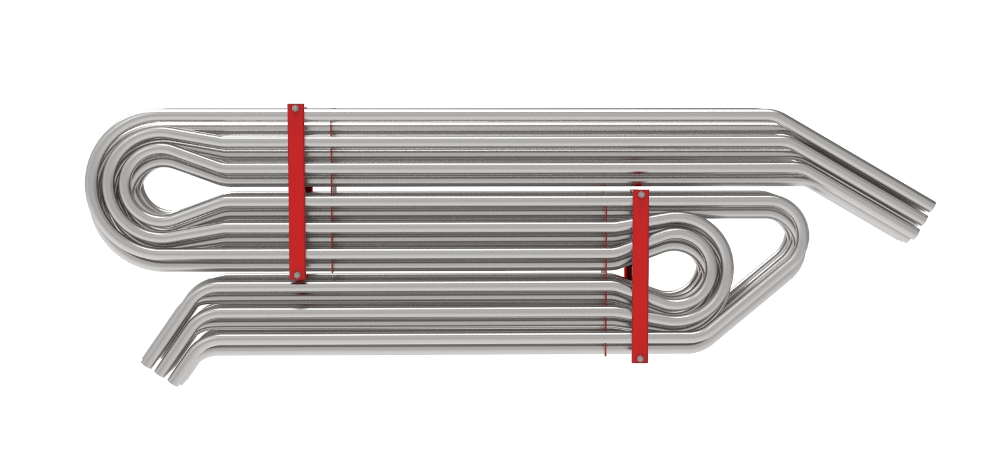Пакеты змеевиков из нержавеющей стали труба Ø38х2, радиус гиба 100 мм.
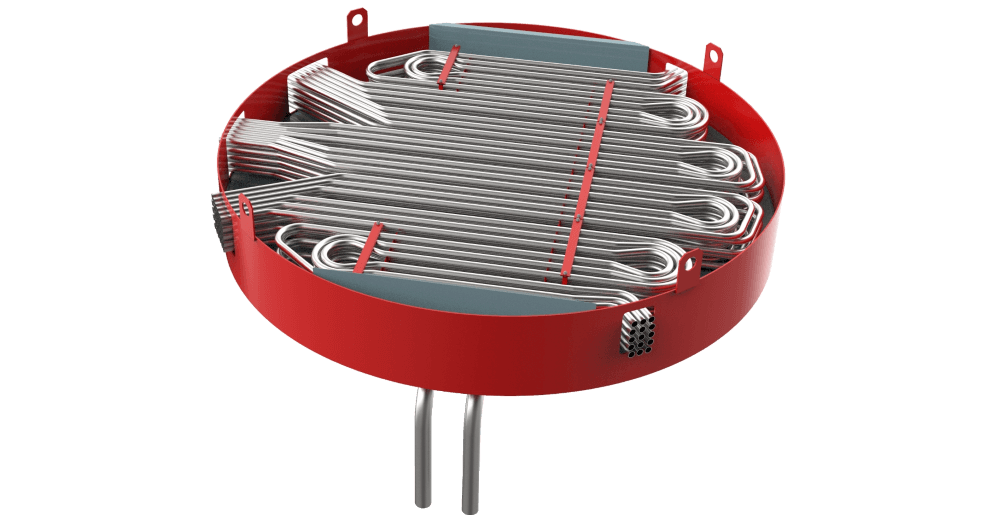Элементы теплообменного аппарата в сборе Габаритные размеры 3200х3200х1400 мм Вес 1417 кг